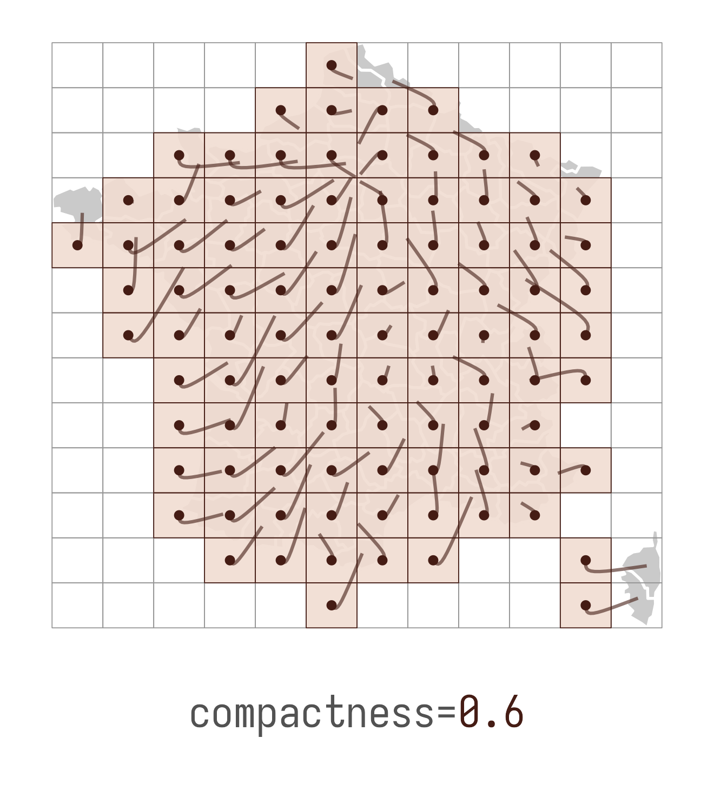

::gridmappr
for gridmap design
and analysis
– Roger Beecham
Gridmaps
Gridmaps
Gridmaps
gridmappr
for generating layoutsggplot2
for gridmap designtidyverse
for gridmap analysis

gridmappr for generating layouts
Gridmap layouts
Gridmap layouts
gridmappr layouts
gridmappr layouts

gridmappr layouts
ptsA tibble of geographic points(x,y)to be allocated to a grid.n_rowMaximum number of rows in grid.n_colMaximum number of columns in grid.compactnessParameter between0and1where0allocates towards edges,0.5preserves scaled geographic location and1allocates towards centre of grid.spacersOptional list of grid cell locations defining grid location of fixed spacers which cannot be allocated points. Coordinates are in(row, column)order with the origin(1,1)in the bottom-left. The default is an empty list.
gridmappr layouts
ptsA tibble of geographic points(x,y)to be allocated to a grid.n_rowMaximum number of rows in grid.n_colMaximum number of columns in grid.
gridmappr layouts
# row col area_name
# 1 9 7 Aisne
# 2 5 6 Allier
# 3 4 9 Hautes-Alpes
# 4 3 10 Alpes-Maritimes
# 5 7 9 Haute-Saône
# 6 1 3 Hautes-Pyrénées
# 7 8 8 Aube
# 8 1 5 Aude
# 9 2 6 Aveyron
# 10 1 7 Hérault
# 11 8 5 Hauts-de-Seine
# 12 10 2 Calvados
# 13 4 5 Cantal
# 14 4 1 Charente-Maritime
# 15 6 5 Cher
# 16 4 8 Isère
# 17 3 6 Lozère
# 18 9 1 Côtes-d'Armor
# 19 8 6 Val-de-Marne
# 20 9 5 Parisgridmappr layouts
gridmappr layouts
compactnessParameter between0and1where0allocates towards edges,0.5preserves scaled geographic location and1allocates towards centre of grid.
gridmappr layouts
gridmappr layouts
spacersOptional list of grid cell locations defining grid location of fixed spacers which cannot be allocated points. Coordinates are in(row, column)order with the origin(1,1)in the bottom-left. The default is an empty list.
gridmappr layouts
ggplot2 for gridmap design
Create sf gridmap object
Create sf gridmap object
Create sf gridmap object
Gridmap via sf object
Gridmap via sf object
text position : dept centroid
Gridmap via sf object
point area : perimeter
Gridmap via facet_grid()
bar height : 1/dist
Gridmap via facet_grid()
1/dist
Gridmap via facet_grid()
bar height : 1/dist
OD maps via facet_grid() + sf object


OD maps via facet_grid() + sf object
highlight : same OD
OD maps via facet_grid() + sf object
fill : 1/dist
tidyverse for gridmap analysis
tidyverse for gridmap analysis

tidyverse for gridmap analysis
tidyverse for gridmap analysis
tidyverse for gridmap analysis
tidyverse for gridmap analysis
inner
outer
tidyverse for gridmap analysis
tidyverse for gridmap analysis
tidyverse for gridmap analysis
tidyverse for gridmap analysis
github.com/rogerbeecham/gridmappr
Roger Beecham | School of Geography | Leeds Institute for Data Analytics